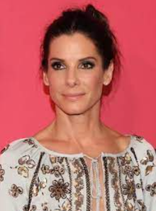

Zašto izabrati nas?
- Vajarstvo je zabavno i opuštajuće kad naučite kako se pravilno radi.
- Probudićete svoju kreativnost praveći nešto što vas inspiriše.
- Nasi ljubazni edukatori će sa vama proći kroz sve korake učenja i kreativnosti.
- Sav materijal za vajarstvo i oprema su uključeni u cenu.
- Vajarstvo može biti i dodatni izvor zarade, ako to zaista želite.
- Početni kurs
- Srednji kurs
- Napredni kurs
Početni kurs namenjen je za:
- upoznavanje sa vrstama gline
- priprema gline za rad
- propuštanje gline kroz sito i dobijanje neobičnih koralnih struktura
- pravljenje crteža na glinenoj ploči
- čuvanje i sušenje gline
- upoznavanje sa tehnikom ploce
- modeliranje najčudnijih životinja
- oživljavanje svojih skica u 3D svetu
Naš instruktor pocetnog nivoa:
Ana Anić
Srednji kurs namenjen je za:
- oblikovanje iz kugle
- reljefnu dekoraciju
- rad sa: kalupima, drškama
- upoznavanje sa tehnikama za oblikovanje figura
- oblikovanje figura
- glazure, korišćenje točka
- učenje tehnika portreta
- oblikovanje portreta
- upoznavanje sa livenjem
Naš instruktor srednjeg nivoa:
Julija Julić
Napredni kurs namenjen je za:
- upoznavanje sa tehnikama bojenja
- oblikovanje korišćenjem bojenja engobama
- oblikovanje korišćenjem bojenja masama
- oblikovanje korišćenjem glaziranja
- obrada tema iz flore i faune
- oblikovanje zivotinja i biljaka korišćenjem naučenih tehnika
- obrada tema iz juvelirstva
- oblikovanje nakita korišćenjem naučenih tehnika
- sumiranje svih naučenih tehnika
- izložba
Naš instruktor naprednog nivoa:
Sandra Bulić


{kind=link}
{kind=link}
{kind=link}
{kind=link}
{kind=link}